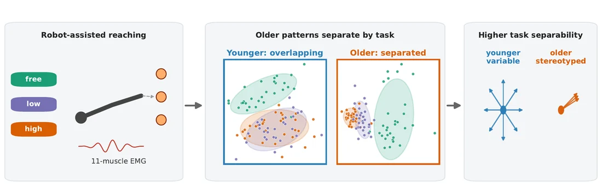
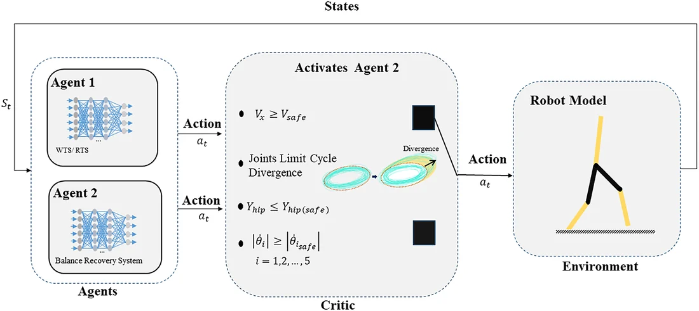
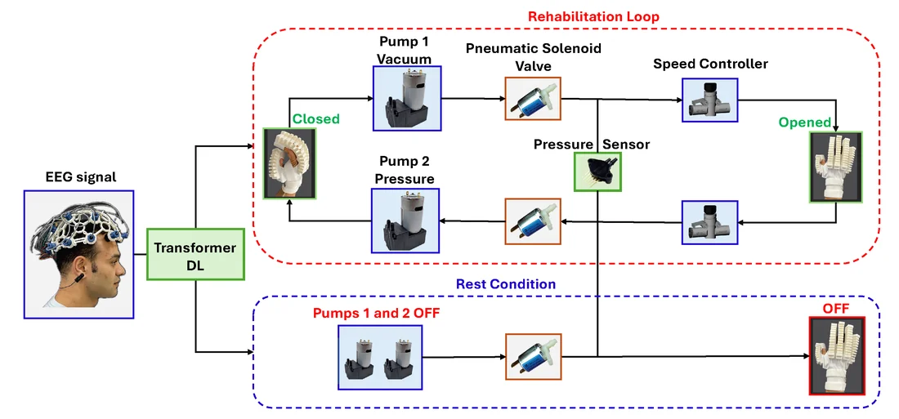
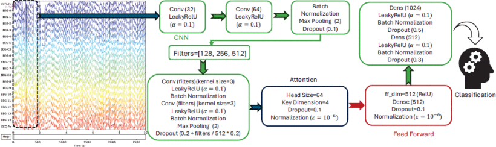

Ph.D. Candidate · Mechanical & Aerospace Engineering · University of Virginia
Soroush Zare
I build brain–computer interfaces and learning-based controllers for wearable robots, decoding movement intent from EEG and turning it into assisted motion.
01
Research
I am a Ph.D. candidate in Mechanical and Aerospace Engineering at the University of Virginia, working with Prof. Ye (Sarah) Sun in the WEARLab. My research connects neuroscience and robotics: deep-learning models that decode motor imagery from non-invasive EEG, reinforcement-learning and adaptive controllers for robots that work close to people, and soft wearable exoskeletons for neurorehabilitation.
The aim is assistive technology that responds to what a person intends to do and is practical to use in everyday settings, improving quality of life for people with mobility impairments. The work applies to neurorehabilitation, assistive robotics, and human–machine interaction.
One closed loop, four problems
-
01
Sense
Non-invasive EEG and surface EMG, including embroidered textile electrodes.
-
02
Decode
Transformer and CNN models that read motor imagery from EEG.
-
03
Control
Deep reinforcement learning and adaptive control for robots that must stay stable.
-
04
Assist
Soft gloves and exoskeletons for hand, arm, and sit-to-stand support.
Focus areas
- Brain–computer interfaces
- EEG signal processing and neural decoding
- Artificial intelligence
- Deep learning, reinforcement learning, and transformer models
- Robotic control & automation
- Advanced control systems, ROS (Robot Operating System), real-time control optimization, and industrial automation
- Wearable robotics
- Soft exoskeletons and rehabilitation systems
- Neurorehabilitation
- Adaptive control strategies for motor recovery
Recent
- 2026Paper on the Coordination-Task-Separability Index at IEEE BSN 2026, with open-source code.
- 2026Journal article in Smart Health on decoding motion intention from motor-imagery EEG.
- 2025Olsen Graduate Fellowship and Outstanding Graduate Research Award, University of Virginia.
- 2025NeuroFlex published in Sensors; bipedal-locomotion paper in ASME Letters in Dynamic Systems and Control.
- 2024NSF Student Travel Award, IEEE/ACM CHASE 2024.
Methods & tools
- EEG signal processing
- Surface EMG
- Motor-imagery decoding
- Transformers
- Convolutional networks
- Deep reinforcement learning
- Real-time control
- ROS / ROS 2
- Gazebo
- Python
- PyTorch
- Soft robotics
- Exoskeleton design
- 3D printing
- Compliant materials
02
Publications
12 peer-reviewed papers: 5 journal articles and 7 conference papers, 7 as first author.
2026
-
ConferenceIEEE-EMBS International Conference on Body Sensor Networks (BSN), 2026
Coordination-Task-Separability Index: A sEMG-based Estimation of Robot-Assisted Rehabilitation
A surface-EMG index that quantifies how separable a person's muscle-coordination patterns are across levels of robot assistance during reaching. With 11-muscle EMG, older adults showed more task-separated, stereotyped coordination, while younger adults showed overlapping, more variable patterns.

-
JournalSmart Health, vol. 40, 100647, 2026
Understanding human motion intention from motor imagery EEG based on convolutional neural network

2025
-
ConferenceIEEE 21st International Conference on Body Sensor Networks (BSN), 2025
Ubiquitous Embroidered Electrodes: An Open-Source Platform for Biopotential Measurement
-
JournalASME Letters in Dynamic Systems and Control, 5(4), 041004, 2025
Robust Underactuated Point-Feet Bipedal Locomotion Using Deep Reinforcement Learning and a Balance Recovery System
A two-agent deep reinforcement learning framework for robust bipedal locomotion: one agent controls walking and running, a second handles balance recovery, keeping the robot stable under disturbances.
Watch the 39-second video

-
JournalSensors, 25(3), 610, 2025
NeuroFlex: Feasibility of EEG-Based Motor Imagery Control of a Soft Glove for Hand Rehabilitation
An EEG-based brain–computer interface for a soft robotic glove. A transformer decodes motor-imagery signals from EEG, enabling real-time control of the glove for hand therapy.



2024
-
ConferenceIEEE 20th International Conference on Body Sensor Networks (BSN), 2024
A Low-Cost Wearable Exoskeleton for Sitting and Standing Assistance
A low-cost wearable exoskeleton that assists people with mobility impairments during sitting and standing transitions, with smooth acceleration and deceleration control and adaptive motion support.
-
ConferenceIEEE/ACM Conference on Connected Health: Applications, Systems and Engineering Technologies (CHASE), 2024, pp. 189–190
EEG Motor Imagery Classification using Integrated Transformer-CNN for Assistive Technology Control
An integrated transformer–CNN architecture for classifying EEG motor imagery: convolutional layers extract features and transformer attention improves classification for assistive-technology control.



2023
-
JournalProgress in Biomedical Engineering, 5(3), 032003, 2023
Wearable upper limb robotics for pervasive health: a review
2022
-
JournalRobotica, 40(11), 3863–3877, 2022
Experimental study on the control of a suspended cable-driven parallel robot for object tracking purpose
2020
-
Conference6th Iranian Conference on Signal Processing and Intelligent Systems (ICSPIS), 2020
Reconstructing 3-D Graphical Model Using an Under-Constrained Cable-Driven Parallel Robot
-
Conference28th Iranian Conference on Electrical Engineering (ICEE), 2020
Kinematic Analysis of an Under-constrained Cable-driven Robot Using Neural Networks
-
Conference10th ISME Annual Student Conference, 2020
MIMO Dynamic Control of a Suspended Underactuated Cable Robot Using Genetic Algorithm
03
Projects & code
Open-source code
-
Python · MIT
realtime-ssvep-bci
A real-time SSVEP brain–computer interface: look at an option to select it. Runs the full loop (stimulate, acquire, epoch, decode) and declines to act when a decode falls below its confidence threshold. Verified on synthetic data; validation on human recordings is in progress.
-
Python · MIT
ctsi-emg
Reference implementation of the Coordination-Task-Separability Index. Reproduces every figure, table and reported number in the paper from the raw NeBULA EEG–EMG reaching dataset.
-
Paper code
NeuroFlex
Code for the NeuroFlex paper: a transformer that decodes motor imagery from EEG to drive a pneumatic soft glove for hand rehabilitation.
Research projects
-
Transformer-based EEG decoder
EEGDiffFormer
A transformer-based architecture for classifying EEG motor imagery, built for intent validation and robotic adaptation.
-
EEG-driven soft exoskeleton
NeuroMotion
A soft exoskeleton system that adapts to the user's movements, combining reinforcement learning with real-time EEG signal processing.
-
Neuroplasticity enhancement
VR-Bike EEG Study
EEG monitoring integrated with virtual-reality cycling to study and enhance neuroplasticity in rehabilitation settings.
-
Deep RL in robotics
Smart Grasping (UR5)
Grasping policies trained with deep reinforcement learning for the UR5 robotic arm in the Gazebo simulator.
-
Obstacle avoidance
Linux for Robotics
Real-time autonomous robot navigation with Bash scripting, ROS 2 and Gazebo simulation. Built for the Linux for Robotics certificate by The Construct.
04
Experience & education
-
Jan 2023 – Present
Graduate Research Assistant
University of Virginia · Charlottesville, VA · WEARLab
- Designing and developing a soft upper-limb rehabilitation exoskeleton.
- Contributed to the design and control of wearable soft rehabilitation robots using compliant materials and 3D printing.
- Developed transformer-based deep learning pipelines that decode EEG motor imagery for real-time upper-limb exoskeleton control.
- Focused on non-invasive EEG acquisition, pre-processing, and classification to interpret motor intent and autonomic patterns.
- Collaborated across disciplines to integrate high-resolution EEG with real-time motor-function support systems.
- Developed non-invasive EEG sensing that reduces setup complexity and improves user comfort in real-world use.
-
Sep 2022 – Jan 2023
Research Assistant
York University · Toronto, Canada
- Developed and simulated robotic grasping mechanisms for the UR5 arm in ROS.
- Used Gazebo for real-time simulation and testing of control algorithms.
- Implemented deep reinforcement learning for intelligent robotic manipulation.
-
Sep 2018 – Sep 2022
Research Assistant
University of Tehran · Tehran, Iran · Human and Robot Interaction Laboratory (TaarLab)
- Controlled a cable-driven parallel robot (CDPR) using deep reinforcement learning.
- Constructed 3-D models of objects using a CDPR.
- AI-based object tracking with a CDPR.
- System identification of a suspended, under-constrained cable-driven robot.
- Control of a suspended, under-constrained cable-driven robot for 3-D graphical model reconstruction.
Education
- 2023 – presentPh.D., Mechanical and Aerospace Engineering
University of Virginia - 2018 – 2021M.S., Mechanical Engineering
University of Tehran
Thesis: Deep Reinforcement Learning Control of Suspended Cable-Driven Robots - 2014 – 2018B.S., Mechanical Engineering
Shiraz University
Thesis: Modeling and analysis of bladeless wind turbines
05
Honors & awards
- 2026Link Lab Distinguished Research Award
Link Lab, University of Virginia - 2025Olsen Graduate Fellowship
University of Virginia - 2025Outstanding Graduate Research Award
Mechanical and Aerospace Engineering, University of Virginia - 2025Best Poster Award
Mechanical and Aerospace Engineering, University of Virginia - 2025Best Researcher Award in Engineering
Popular Scientist - 2024NSF Student Travel Award
IEEE/ACM CHASE 2024 - 2023 – 2024GRADESTAR Fellowship
University of Virginia - 2022 – 2023York Graduate Scholarship
York University
06
Leadership & service
Leadership
- 2024Vice President
Graduate Student Board, Mechanical and Aerospace Engineering, UVA - 2023Recruitment Chair
Graduate Student Board, Mechanical and Aerospace Engineering, UVA
Memberships
- Student Member, Institute of Electrical and Electronics Engineers (IEEE)
- Associate Member, Institute of Physics (IOP)
- Student Member, Association for Computing Machinery (ACM)
Peer review · journals
- Advanced Science
- Journal of Neural Engineering
- ACM Transactions on Computing for Healthcare
- Smart Materials and Structures
- Bioinspiration & Biomimetics
- Progress in Biomedical Engineering
- Mechanism and Machine Theory
- Smart Health
- Robotica
- Biomedical Physics & Engineering Express
- Engineering Research Express
Peer review · conferences
Let's talk.
Email is the fastest way to reach me.